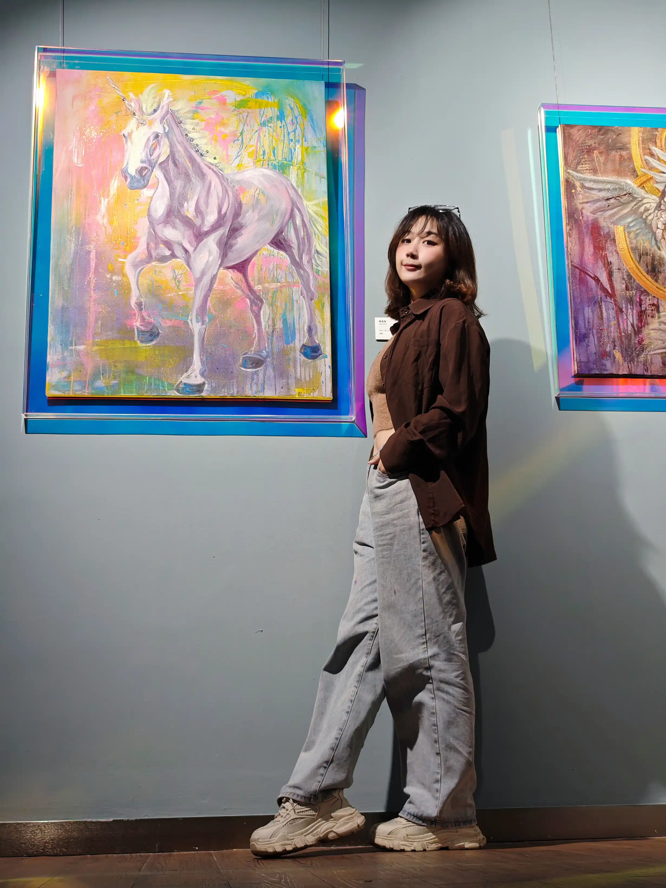

I am an independent artist currently based in Xiamen, China, working across painting and mixed media to navigate the fluid boundaries between reality and the imaginary. My practice weaves together elements of science fiction, ancient mythology, and contemporary visual culture to construct spaces where femininity, fear, and beauty converge.
By reinterpreting the language of cosmic horror and religious symbolism, I seek to carve out a contemporary feminist narrative—one that transforms traditional sacred icons and "maternal" silence into symbols of empowerment and agency.
My creative approach is anchored in a diverse intellectual background. A foundation in Economics from the University of Bristol provides a systemic lens through which I analyze social and historical structures, while my professional tenure in China’s gaming and manga sectors—ranging from anime curation to the development of 3D digital identities—deeply informs my visual language.
I view my practice as an intersection where the rigid logic of systems meets the fluid, mythic potential of digital and contemporary culture, allowing me to explore how constructed worlds reflect our collective psyche.
